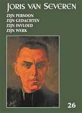

Met deze aflevering zijn we aan het 26e Jaarboek Joris van Severen
toe. We brengen andermaal een ruime verscheidenheid aan
bijdragen die op een of andere wijze inzoomen op de ondertitel
van deze reeks: Joris van Severen, zijn persoon, zijn
ideeën, zijn invloed en zijn werk.
Vooreerst komt Luc
Pauwels aan het woord die, na zijn recente grote biografie van
Joris van Severen, als het ware de lijn doortrekt met z’n essay
Joris van Severen, een begin…
Daarop aansluitend
brengt Romain Vanlandschoot de resterende hoofdstukken van zijn
diepgravend essay De laatste weg
alleen, Joris van Severen 8 mei 1927 – 29 mei 1929, In
het afsluitende luik van dit essay - waarvan het eerste deel
werd opgenomen in het Jaarboek Joris van Severen 25
(2021) - komen respectievelijk aan bod: ‘’Een vernietigende,
kwetsende en arrogante rede’, ‘Wil Joris van Severen wel een
Directorium?’, ‘Roosendaal helemaal niet rooskleurig’, ‘De
meerderheid van het KVNV is met mij’ en ‘De schaduw van August
Borms’.
In Gerard van der
Horst en het Verdinaso in Nederland brengt Ruud Bruijns
diens rol en de verdiensten in herinnering bij het ontstaan en
de uitbouw van de Noord-Nederlandse tak van Van Severens
beweging. “Ik weet
zeer goed dat gij de eerste zijt geweest…”, loofde Van Severen hem. Hij
was niet slechts de eerste, doch ook de laatste getrouwe, zo
blijkt.
Toen
de Nederlandse regering in 1934 het ambtenarenverbod inzake
lidmaatschap van Musserts NSB afkondigde publiceerden 19
hervormde predikanten een pamflet tegen deze maatregel. Hun
oproep werd naderhand door nog eens 100 predikanten
onderschreven. Hun grote bezwaar werd hen ingegeven door hun
antibolsjewisme. Onder hen waren er een vijftal abonnees van Hier
Dinaso!, het wekelijkse tijdschrift van het Verdinaso.
Geen van die vijf was NSB’er en evenmin hebben ze tijdens de
Tweede Wereldoorlog gecollaboreerd met de Duitse bezetter, wel
integendeel: sommigen onder hen stonden in het daadwerkelijke
verzet. Daarover vernemen we meer in de bijdrage van Henk
Tijssen over De ‘Hier Dinaso!’-lezers onder de hervormde
predikanten in de noordelijke Nederlanden.
Niet
onterechte wordt wel eens beweerd dat in de jaarboekenreeks over
Joris van Severen bij voorkeur aandacht besteedt wordt aan Louis
Gueuning en Emiel Thiers, i.c. dan wat betreft hun rol bij de
teloorgang van het Verdinaso aanvang het jaar 1941. In de
bijdrage van de hand van Maurits Cailliau over Het andere
geluid: over de rol van Jef François in 1940-1941 wordt
gefocust op het aandeel van Jef François en Pol le Roy in deze
cruciale maanden.
Na het
einde van de Tweede Wereldoorlog zijn tal van pogingen
ondernomen om de ideeën die het Verdinaso nastreefde – de
eenheid van de Nederlanden en de structurering van het
maatschappelijk bestel op basis van het solidarisme – opnieuw te
actualiseren. Over één van deze pogingen brengt prof. em. Hans
Nelis, met z’n essay Het
gedachtegoed van een neo-Dinaso beweging: De Dietse
Solidaristische Beweging (DSB), als destijds
geëngageerd militant van de DSB, verslag uit.
Afsluitend komt in deze
editie ook Joris van Severen zelf aan het woord middels zijn Dagboeknotities
over de periode aanvang januari tot einde april 1921. Daarin
komt, naast zijn zorgen om ‘Maine’, ook z’n weerzin tegen alle
vormen van geweld manifest op de voorgrond. Daarnaast ook een
handgeschreven notitie van zijn hand.
Luc Delafortrie’s
gedicht Denkend aan het Verdinaso sluit het jaarboek af.
Dit 26e Jaarboek
Joris van Severen is de laatste editie uitgegeven door het
Studiecentrum Joris van Severen. Doch niet het laatste in de
reeks. Als reeds in de Nieuwsbrief Joris van Severen
aangekondigd fuseren het ‘Studiecentrum Joris van Severen’ en de
‘Stichting Joris van Severen’ in de loop van dit jaar onder de
naam Joris van Severen Instituut, dat vanaf 2023 de
nieuwe uitgever van het Jaarboek Joris van Severen
wordt.
______________
N.a.v. Jaarboek Joris van Severen 26 (2022), 208 pp, ill, ISBN 9789076057262, ledenprijs 29 €, boekhandelsprijs 35 €